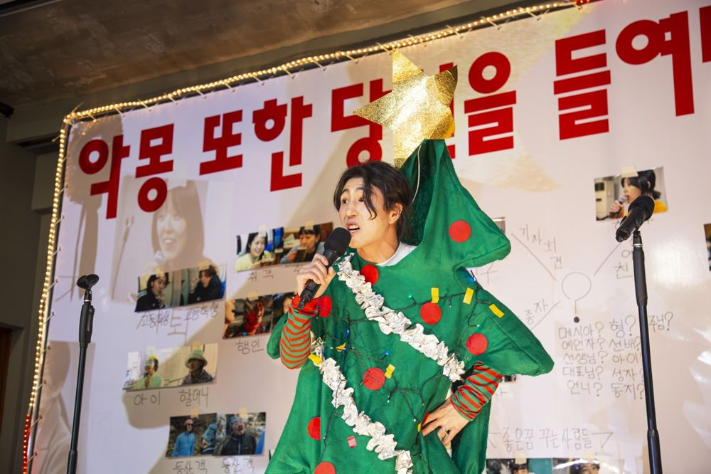

Green Pig > Archive > The Nightmare Also Gazes Into You

A perfect plot dreamed in an unfinished world. Nightmares exclude no one. Plots become perfect through exclusion. Instead of following a protagonist swept up in an event, the work tries to bind together a world in which an event and its outside overlap. While Hamlet pretends to be mad for revenge, the people outside the castle must have been trembling at Fortinbras's march. From the thought that when we gaze into a plot the plot also gazes into us, it sets up the hypothesis that a world interpreted through cause and effect is not the only world.
One day the protagonist wakes and, believing that last night's nightmare holds clues to the things ruining the world, quits his job. The "Nightmare Removal Association" he founds interprets each new nightmare to decide what to remove: trash on hiking trails, the urge to cut in line, selfishness between friends. The association's peaceful activities are praised in the press and on social media. Then the new nightmares stop, and a member, interpreting a target to the extreme, commits "that incident" and is arrested. The play starts here. The protagonist holds a press conference to convey his sincerity, but public opinion turns and the association splits. Then a new nightmare comes to him.
A work by playwright Jeon Sunghyun, who has experimented with theatrical form through Contemporaries and Extra Chronicles. The more it chooses the most unnatural ways theater can work, with no protagonist, deliberately disrupted narrative and the boundaries of the theater undone, the closer the world onstage comes to reality.
2023.12.8–17 / TINC (This is not a church)
Playwright: Jeon Sunghyun
Director: Yoon Hansol
Assistant director: Ju Eungil
Sound: Jeon Minbae
Video: Yoon Mincheol
DJ: Cho Woongchul
Documentation: Han Munhui
Graphic design: Workroom
Producer: Kim Yeongrim, Na Yujin, Noh Jisang
Cast: Kim Wontae, Kim Yonghui, Park Subin, Park Jeonggeun, Yoon Jaae, Lee Dongyeong, Lee Seunghun, Jung Namu, Jung Yeonjong, Cho Seongguk, Choi Juyeon, Choi Jihyeon
2023.12.27 Article (Maeil Labor News)
2023.12.18 Criticism, Lee Gyeongmi (Naver blog)
Previous: Ghost-Gut | Next: Shame
Back to the archive | Any work
Published 2026.11.13